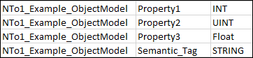

Create Object Models
- Create a CSV file with details of object models and their properties.

- Select Project > System Settings > Libraries > Simatic S7 > Object Model.
- Click the Import tab.
- Click Browse.
- The File Open dialog box displays.
- Select the CSV file with details of the object models and click OK.
- The CSV file is pre-processed and validated. If the file is valid and has all the required parameters, the entries in the file are listed in the Source Items list. In case of any discrepancies, an error message displays in the Preimport File Log dialog box. You can access this dialog box by clicking the Analysis Log button.
- Select the items to import from the list of items displayed in the Source Items list.
- Click
 to import.
to import. - The selected items are transferred to the Items to Import list.
- Click Import.
- A confirmation message displays asking if you want to import the selected items.
- Click Yes.
- The import procedure begins and a progress bar displays.
- When the import completes successfully, the Import dialog box displays a summary of the import information.
- Click OK.
- Set the ManagedType for the imported object model:
- Select the imported object model, if not already selected.
- Click the Models and Functions tab.
- In the Main expander, select the Managed type as S7DataPoint.
- Click Save
 .
.
- The Object Model is created below the Object Model folder.